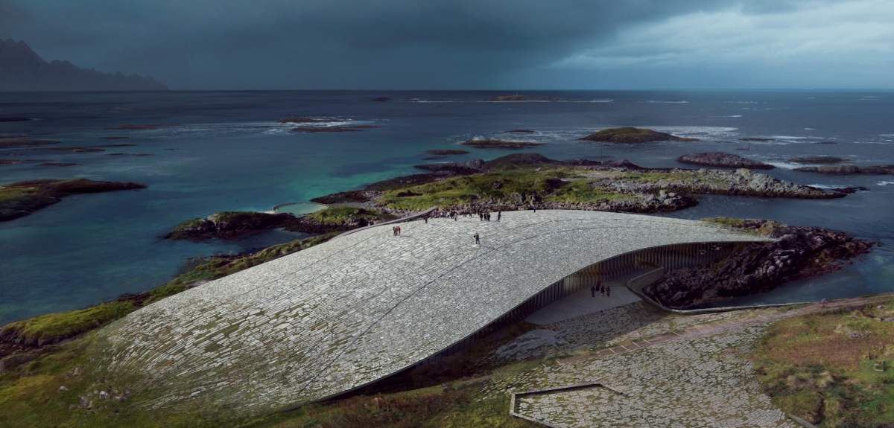
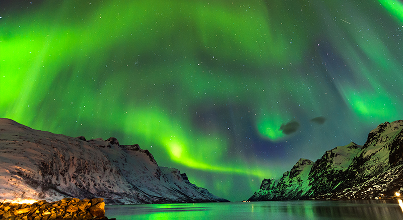
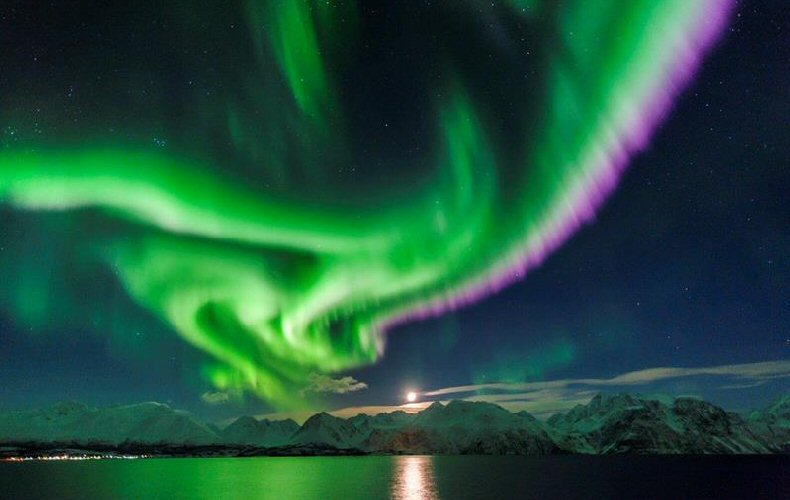
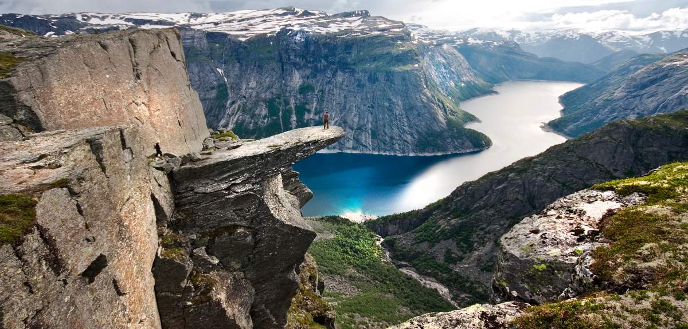
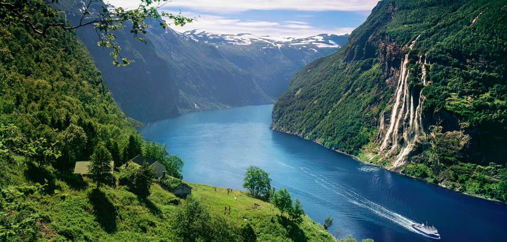
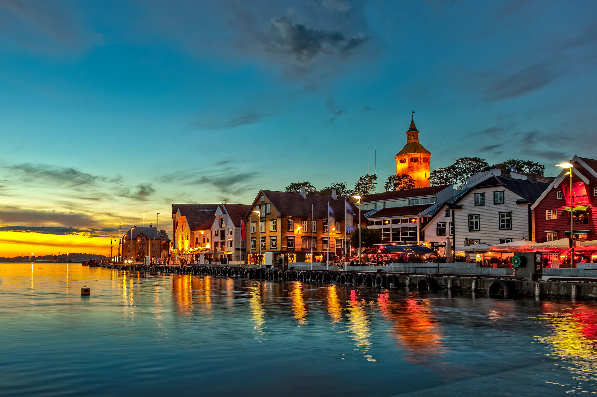
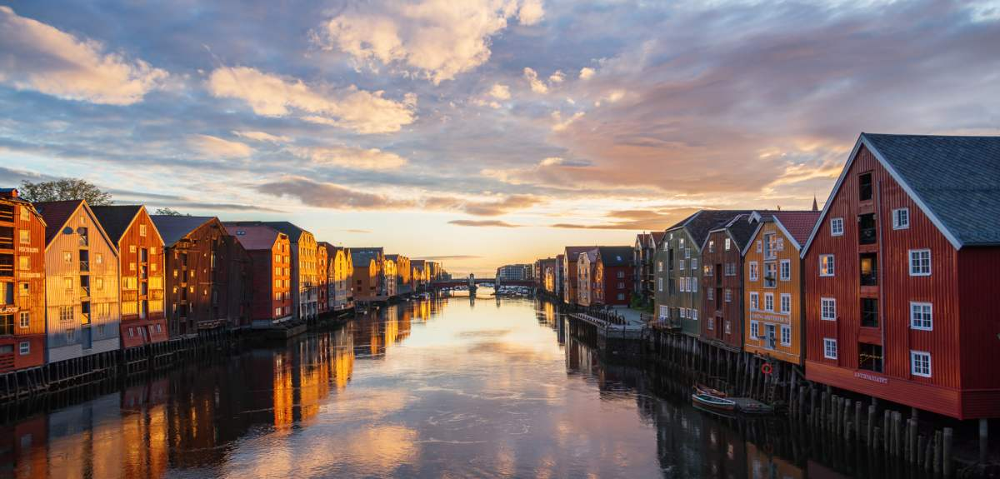
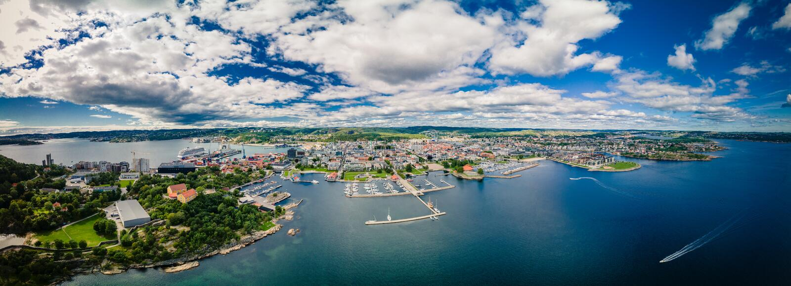
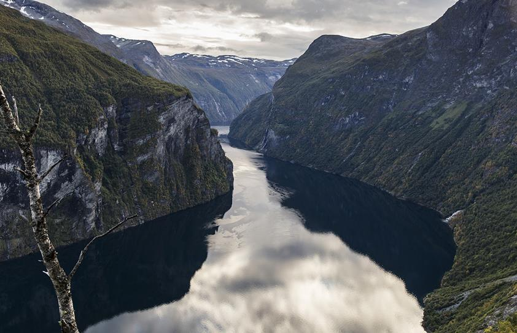
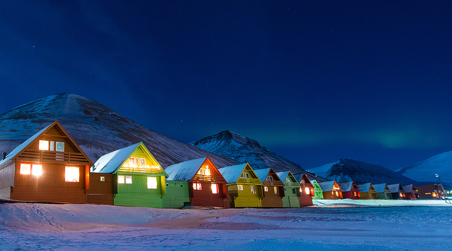

Bienvenue en Norvège
Villes à l’ambiance urbaine cool, fjords scintillants, aurores boréales et villages isolés au nord du cercle polaire :
la Norvège est un pays très étendu, véritable mine d'activités et de sites à visiter.

Villes à l’ambiance urbaine cool, fjords scintillants, aurores boréales et villages isolés au nord du cercle polaire :
la Norvège est un pays très étendu, véritable mine d'activités et de sites à visiter.
LE TOP-10 DES SITES NORVÉGIENS
1. La région d’Oslo
La capitale norvégienne, désignée Capitale verte de l’Europe 2019, est une véritable ruche. Scène culinaire innovante, mosaïque de quartiers modernes et dynamiques, hôte d’innombrables événements et de tout nouveaux musées et attractions, Oslo n'a pas fini de vous surprendre. Entre l’Oslofjord et les épaisses forêts qui bordent la ville, vous pourrez aisément alterner sorties urbaines et activités de pleine nature comme le vélo, le ski et les excursions d’île en île. Dans les régions voisines de Østfold et de Vestfold, la côte abrite, entre autres charmantes bourgades, Fredrikstad et Tønsberg. À environ une heure de route d’Oslo se trouve le nouveau grand pôle artistique, Hadeland, avec le musée Kistefos et son spectaculaire bâtiment torsadé, The Twist.
2. Tromsø et le pays des aurores boréales
La capitale de l’Arctique, Tromsø, se situe en plein cœur de la Norvège du Nord. Si, sur la liste de vos rêves de voyages, figurent aurores boréales, baleines, soleil de minuit et aventures en pleine nature, n’hésitez plus, c’est là qu'il faut aller. Profitez des conditions idéales offertes par la région du Lyngenfjord pour le ski de randonnée et la marche, découvrez la culture samie dans des villes comme Karasjok et Alta et tenez-vous sur l’extrême pointe nord de l’Europe au cap Nord. Dans l’est de cette vaste région se trouve la péninsule de Varanger, paradis des ornithologues. Découvrez la pêche au crabe ou le traîneau à chiens à Kirkenes, où vous pourrez également passer la nuit dans un hôtel de glace. Dans les environs de Tromsø, plusieurs îles méritent le détour, dont Senja Kvaløya et Sommarøy.
3. Les Lofoten et le Nordland
Sommets vertigineux, fjords étincelants, authentiques villages de pêcheurs et plages photogéniques. Sans parler des aurores boréales et du soleil de minuit ! Vous avez probablement déjà vu ces clichés (nombreux !) envoûtants des Lofoten et des Vesterålen sur Instagram. Nous vous conseillons vivement de visiter ces destinations hors saison, quand la foule s’est retirée. Pour ceux qui veulent faire le plein de grand air, la région de Narvik, et celle moins connue de Helgeland, un peu plus au sud, sont des paradis pour le ski de randonnée et la marche. Vous pourrez prendre la Route du littoral entre Trøndelag et Bodø, élue parmi les plus belles routes du monde. La dynamique ville de Bodø, plus grande ville du comté du Nordland, vous propose toute une palette d'activités de pleine nature, ainsi qu'une scène culturelle très vivante. D'ailleurs, Bodø sera la Capitale européenne de la culture 2024.
4. Bergen et les fjords de l’ouest
La seconde plus grande ville du pays, Bergen, réunit en son sein des sites inscrits sur la liste du patrimoine mondial de l’UNESCO, des restaurants cotés, un secteur de la mode et une scène musicale dynamiques. Visitez des musées comptant parmi les plus réputés de Norvège, tels les musées d'art composant le KODE, des maisons de compositeurs. Flânez dans les petites ruelles pavées et contemplez la ville d’en haut, depuis le sommet d'une des sept collines l’encerclant. Bergen est le point d’accès à quelques-uns des fjords les plus connus de Norvège, notamment le Sognefjord, plus long et profond fjord norvégien, au nord, et le Hardangerfjord, qui abrite le célèbre rocher de Trolltunga, au sud. Bon nombre de fjords possèdent des ramifications qui sont au moins aussi belles, quoique beaucoup moins fréquentées, que le fjord principal. Rejoignez le village de Flåm, en bord de fjord, par la ligne de Flåm, élue parmi les plus beaux parcours en train du monde. Pour vous défouler en pleine nature dans un environnement qui ne manque pas de piquant, visitez la kommuner de Voss et le Nordfjord.
5. Le Geirangerfjord et le Nord-Ouest
La cascade des Sept sœurs et d'innombrables autres cascades dévalent les versants montagneux pour se jeter dans les eaux claires d'un fjord inscrit sur la liste du Patrimoine mondial de l’UNESCO, le Geirangerfjord, plus célèbre des fjords norvégiens. La pittoresque ville d’Ålesund, caractérisée par ses bâtiments Art-Nouveau, offre une base idéale pour partir à la découverte des fjords. Le Nord-Ouest occupe la portion nord de la Norvège des Fjords et attire les passionnés de sports de pleine nature tout au long de l’année. Åndalsnes, capitale de l’alpinisme, constitue une base idéale au pied de pics vertigineux, non loin de sites fameux comme la route de montagne du Trollstigen et la route de l’Atlantique. Åndalsnes est le terminus de la ligne de la Rauma, qui passe pour être l’un des plus beaux parcours en train du monde. Le Nord-Ouest abrite également un haut-lieu du jazz, Molde, et la capitale du clipfisch, Kristiansund.
6. La région de Stavanger
Que donne un mélange de restaurants étoilés Michelin, de vieilles maisons en bois, d’œuvres de street art de renommée mondiale, le tout baignant dans une atmosphère multiculturelle ? Pour le savoir, allez à Stavanger. Stavanger est la plus grande ville dans le sud-ouest du pays et le point de chute idéal pour partir à la découverte de sites naturels comme le Lysefjord et le Preikestolen (rocher de la Chaire). Le littoral de Jæren est un paradis pour ceux qui aiment les plages, avec certaines des plus grandes et immaculées d’entre elles. Les amateurs de surf et de kitesurf en auront pour leur compte ! Suivez la route de la mer du Nord en direction d’Egersund et découvrez, tel le pimpant Sogndalstrand, des villes et villages pittoresques, posés sur le littoral à la manière d’un collier de perles.
7. Trondheim et le Trøndelag
La région du Trøndelag, située en plein cœur de la Norvège, attire tout particulièrement les fanas d’histoire, les fins palais et les amateurs de pleine nature. Allez pêcher, faire du vélo ou skier, ou encore marcher sur l'un des neuf sentiers du pèlerinage de Saint-Olav, qui mènent tous à la cathédrale de Nidaros à Trondheim. La dynamique ville étudiante de Trondheim, qui est la capitale régionale, est surnommée « le berceau des saveurs scandinaves ». Enrichissez votre expérience gastronomique dans un restaurant étoilé Michelin, un petit café-restaurant à la mode ou le confort douillet d’un salon de café. Laissez-vous tenter par la promesse de produits frais sur la Route en or, dans le district d’Innherred, et voyagez dans le temps dans la petite ville minière de Røros, inscrite sur la liste du Patrimoine mondial de l’UNESCO. Dans le massif du Dovrefjell, vous aurez peut-être la chance d'apercevoir un magnifique animal : le bœuf musqué.
8. Kristiansand et la Norvège du Sud
La Norvège du Sud est la destination rêvée des Norvégiens pour les vacances d'été, avec de charmantes plages, des milliers d’îles et un taux d’ensoleillement annuel supérieur à celui des autres régions du pays. Déambulez dans les petites ruelles aux maisons de bois blanches dans de charmantes bourgades côtières comme Risør, Arendal, Grimstad, Mandal et Flekkefjord, ou partez à la découverte du berceau des traditions folkloriques norvégiennes dans la vallée de Setesdal. La plus grande ville de Norvège du Sud est Kristiansand. Vous pourrez flâner à Posebyen, la Vieille-Ville, savourer des poissons et crustacés, paresser sur la plage de ville et profiter de plusieurs festivals de qualité. Le zoo - parc de loisirs Dyreparken remportera à coup sûr du succès auprès des plus petits. Non loin de Kristiansand se trouve le phare de Lindesnes, qui garde l’extrême pointe sud de la péninsule norvégienne. Lindesnes accueille par ailleurs un extraordinaire restaurant étoilé Michelin, Under, le plus grand restaurant sous-marin du monde.
9. Les monts et vallées de Norvège de l’Est
Les épaisses forêts, profondes vallées et immenses plateaux montagneux de Norvège de l’Est offrent d’excellents cadres pour la pratique de nombreuses activités en pleine nature. Cette région abrite certaines des plus grandes stations de sports d'hiver norvégiennes, comme Geilo, Trysil et Hemsedal. Elles vous garantissent des activités non-stop toute l’année, puisque dès la fonte des neiges, elles se transforment en destinations prisées des cyclistes du monde entier. Valdres, Hallingdal, Lillehammer et la vallée de Gudbrandsdalen sont des destinations familiales populaires réunissant parcs de loisirs, fermes traditionnelles et superbes randos. Il en va de même pour le Telemark, où vous pourrez naviguer sur le canal du Telemark et admirer l’un des plus impressionnants panoramas de Norvège de l'Est, depuis le sommet du mont Gaustatoppen. Les parcs nationaux de Dovrefjell, Jotunheimen et Rondane, offrent d’excellentes opportunités de sports de pleine nature, que ce soit la marche, le vélo, le raft ou l’escalade.
10. Les îles du Svalbard
Prêt à découvrir une faune rare ? L’archipel du Svalbard se trouve dans l’océan Arctique, à mi-chemin entre la Norvège et le pôle Nord. Toute l'année, vous pourrez y prendre part à des activités dépaysantes, dans un cadre à la fois rugueux et fragile. Découvrez le traîneau à chiens, les grottes de glace, les sorties à motoneige ou lancez-vous sur la piste des aurores boréales. Outre plusieurs milliers d’ours polaires, on recense au Svalbard près de 3 000 êtres humains. La ville principale, Longyearbyen, est une petite bourgade colorée proposant un riche éventail d'activités culturelles et des restaurants et bars de grande qualité, que l’on imaginerait très bien au cœur d’une grande métropole.
